Let’s be honest: most corporate slide decks and data tables look less like strategic assets and more like a mid-2000s minivan—unnecessarily packed with the visual equivalent of oversized spoilers and neon underglow. In the race for corporate clarity, data visualization has exactly one job: to deliver crystal-clear insights at lightning speed. Yet, executives are routinely forced to wade through a swamp of "chartjunk"—flashy gradients, aggressive drop shadows, and dizzying cross-hatching patterns that demand an absolute mountain of ink but offer exactly zero extra information. When graphics are swallowed by this digital residue, they become "ducks"—monuments where form completely hijacks function, turning your hard-earned metrics into a noisy sideshow. Forcing a leadership team to decode cryptic shorthand or navigate vertical scale guessing games doesn’t just cause a collective existential crisis in the boardroom; it actively paralyzes organizational momentum.
This framework provides a systematic roadmap to burn that legacy approach to the ground. By deploying Gestalt visual grouping mechanics—subconscious mental hacks like closure, proximity, and similarity—we can transform visual noise into instant clarity, seamlessly guiding the viewer's eye to what actually matters. When applied alongside rigorous table-cleansing principles like right-aligning digits, left-aligning text, and evicting repetitive symbols, your data structures step out of their own way. The operational impact is immediate: it maximizes executive decision velocity. By clearing away cognitive barriers like moiré vibrations and structural clutter, leaders no longer have to play a frustrating game of hide-and-seek with data. Instead, they can absorb clear, high-utility narratives in seconds, trading slow guesswork for rapid, data-backed execution.
Chartjunk
Definition
Think of chartjunk as the data visualization equivalent of putting giant spoilers and neon underglow on a minivan. It is the practice of packing graphics with fancy decorations that consume an absolute mountain of ink but offer exactly zero extra information to the viewer. Designers usually fall into this trap because they want to make the graphic look "premium," force a faux-scientific vibe, inject random color for the sake of it, or simply flex their artistic muscles.No matter the excuse, it just leads to wasted pixels and cluttered layouts that add no real value. You see this kind of flashy, superficial window dressing all the time in both technical papers and corporate media. Honestly? Slapping a bunch of useless gradients and drop shadows onto a page is just a cheap shortcut to avoid doing the hard work of building actually engaging visuals and gathering rock-solid proof. (Tufte, Edward R. "Chartjunk: Vibrations, Grids, and Ducks”, Chapter 5 in The Visual Display of Quantitative Information. Cheshire, Conn: Graphics Press, 1983.)
Vibrations
Sadly, a lot of what we call chartjunk doesn’t even have the decency to be artsy. It is usually just typical graphic clutter invading our screens, like an aggressive over-abundance of grid lines, endless tick marks, and overly complicated layouts that make simple data points look like calculus equations. Half the time, we are left staring at digital residue from automated software plotting that totally ruins an otherwise clean design. Instead of relying on harsh, dizzying cross-hatching patterns that make your eyes vibrate, opt for smooth tint screens using subtle shades of gray. To keep things crystal clear, you should always label specific parts of your graphic with direct text rather than forcing your audience to decode weird textures or pattern fills (just like we show you in Figure 1).
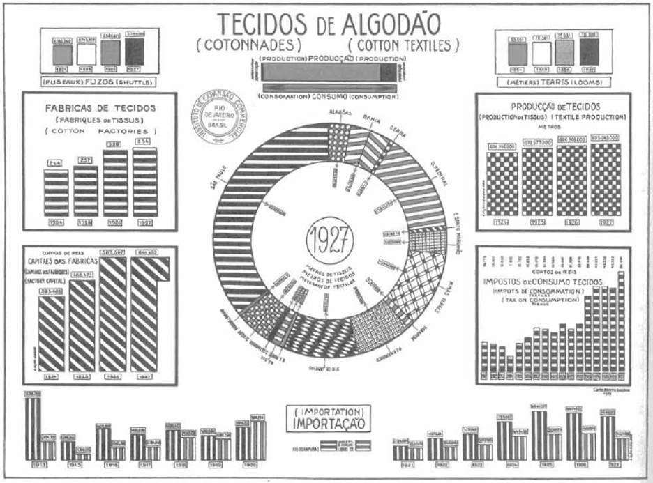
Figure 1. Chartjunk example – vibrations.
Grids
The grid is supposed to be the quiet backup singer of your graph, so it’s usually a great idea to keep it low-key, or just cut it from the setlist entirely, so it doesn’t scream over your actual data. Slapping dark, heavy grid lines across your chart just creates an aggressive visual cage that adds absolutely zero value (as you can clearly see in Figure 2). They don’t offer any secret insights, they make your hard work look incredibly messy, and they introduce a bunch of unnecessary background noise that has nothing to do with the real story your data is trying to tell.
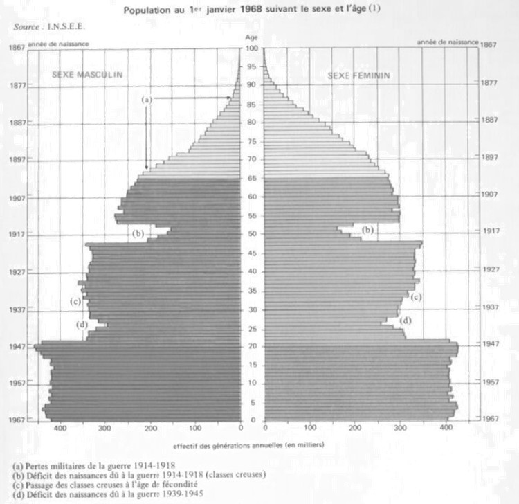
Figure 2. Chartjunk example – grids.
Ducks
When a graphic gets completely swallowed by decorative shapes, digital clutter, or layout dimensions that think they are art installations, it earns a special title in the data world: it is called a duck. This hilarious nickname comes from a real-world building called the “Big Duck” store over in Flanders, New York (take a look at Figure 3 and Figure 4). At that store, the entire building is literally shaped like a giant duck just to sell duck eggs. In the exact same way, a “duck graphic” lets the overall style hijack the entire project, turning the actual numbers into a sideshow while the decoration does all the loud quacking.
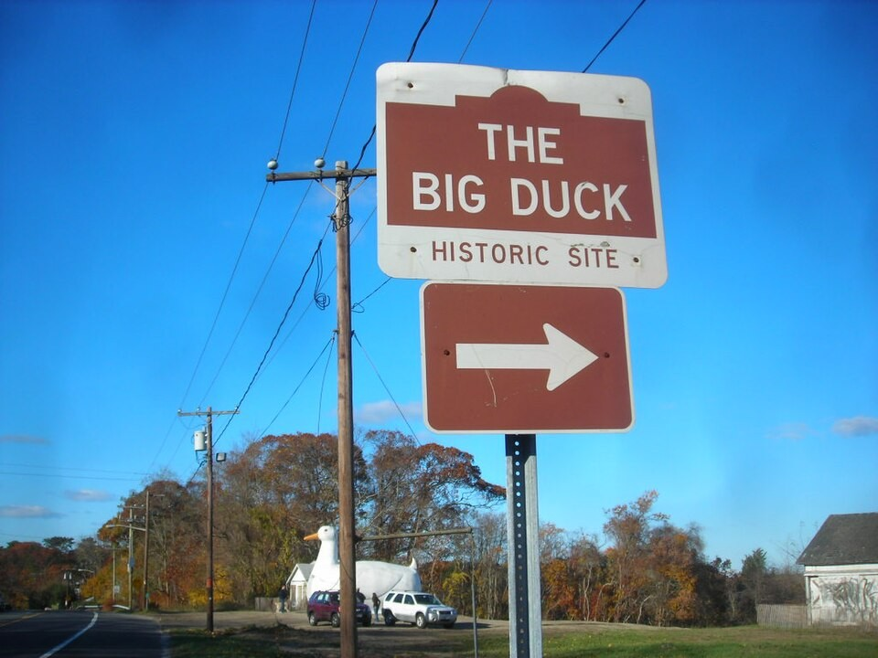
Figure 3. Chartjunk example – The Big Duck historic site marker.Figure 4. Chartjunk example – The Big Duck building.
The classic symptoms of “We-Used-A-Computer-To-Build-A-Duck Syndrome” are on full display in this next example, which tries to rate nine presentation components on a scale of 0 to 100 based on utility, usage frequency, and decision-making power. Figure 5 tackles this with a bar graph sorted in alphabetical order, which is a total mess. It screams at you in all-caps, aggressive sans-serif font, uses dizzying cross-hatching patterns, and truncates the components into cryptic, three-letter computer shorthand. All these design sins feel like a time capsule from decades-old graphic technology, yet somehow they are still alive and well today.
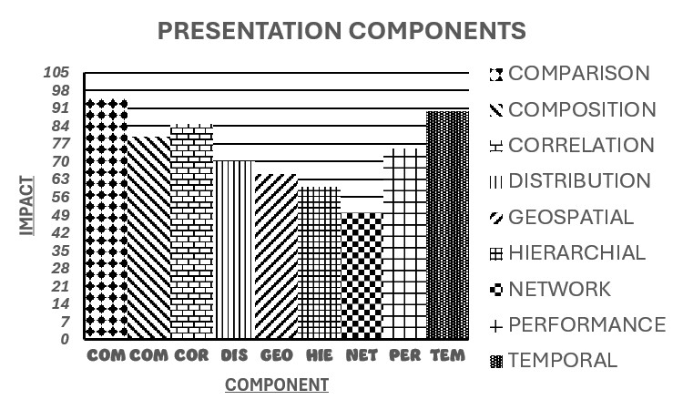
Figure 5. Chartjunk example – bar chart cross-hatching and fonts.
To make matters worse, the graph uses a bizarre vertical scale that jumps by factors of seven, resulting in more value markers and labels than actual data points on the page. Instead of playing these guessing games, we should just print the real values. Since this dataset is short on numbers but heavy on words, it is best to skip the computerized graphics entirely and let a clean table tell the story instead (hello, Table 1). Most people can actually soak up more information from a simple table than a cluttered graph, and they can do it in a fraction of the time.
Table 1. Chartjunk example – table replacement
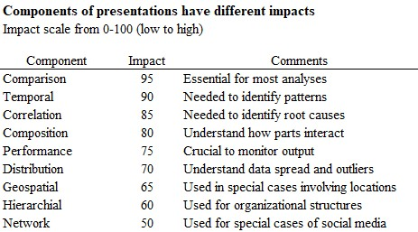
Let’s be honest: chartjunk doesn’t help anyone. At its core, data visualization has one job — to deliver crystal-clear information. Slapping flashy designs, weird angles, or unnecessary three-dimensional effects onto your bars won’t magically make your graphics appealing or fun. While chartjunk can certainly make a boring chart even worse, it cannot rescue a dataset that lacks actual substance.
This wisdom isn’t even new. Way back during a 1955 exhibition at the Whitney Museum of American Art, the art world pointed out that great visualization, whether it is a masterpiece painting or a corporate dashboard, should be simple, clear, calm, and entirely free from distractions. It shouldn’t be a chaotic rollercoaster of erratic movements, bizarre oddities, automated laziness, or sloppy mistakes. Instead, it should be crafted thoughtfully, without trickery, high-pressure visuals, exploitation, or confusion.
To keep your charts in that peaceful, high-utility zone, you need to aggressively avoid the ultimate chartjunk traps. This means staying away from flashy 3D effects that warp perspective, heavy grid lines that cage your data, and overly complex fonts that require a decoder ring. It also means cutting out irrelevant icons or distracting backgrounds, ditching bulky legends when direct labels would work better, and stopping text overloads. Finally, purge any extra chart borders or frames that squeeze your layout, along with pointless colors and purely decorative shading that add no real value.
Gestalt principles
Purpose
Think of Gestalt principles as your brain’s internal Marie Kondo — an automated system that aggressively reorganizes visual clutter into neat, satisfying patterns instead of a chaotic explosion of random shapes. Born in Germany in the early 1900s, these psychological rules explain how we make sense of a complicated world without losing our minds.
We are talking about a star-studded lineup of visual shortcuts: closure, common fate, connection, continuity, enclosure, proximity, and similarity. By tapping into these subconscious mental hacks, you can design charts and graphs that look incredibly sharp, instantly direct your audience’s eyes to the data that actually matters, and make you look like a data-viz wizard.
Closure
Your brain absolutely detests leaving things unfinished. When faced with an incomplete shape, your subconscious immediately rolls up its sleeves and fills in the blanks to create a recognizable pattern. The result? You get a clean, minimalistic design that uses fewer lines but does twice the work. Leveraging this principle makes your presentations look modern, open, and blissfully easy to digest. Take a look at Figure 6 … your eyes are totally seeing a triangle, even though we technically didn’t draw one. Magic? No, just excellent psychology.
Figure 6. Gestalt – Closure.
Common fate
Human beings naturally assume that things moving in the same direction belong in the same club. The cool part? Your design doesn’t actually have to animate or grow wheels to pull this off. You can fake a sense of motion using static elements like arrows, angles, or intentional spacing. The moment your audience’s brain spots a bunch of different objects seemingly traveling toward the exact same destination, it stops treating them like independent freelancers and starts viewing them as a unified team. For a perfect example, check out Figure 7. Because four objects are pointing right and two are heading left, your brain immediately sorts them into two completely different cliques.
Figure 7. Gestalt – Common fate.
Connection
If you want to convince people that two entirely separate things are best friends, just draw a line between them. Seriously, it’s that easy. Elements linked by a line, a curve, or even a shared splash of color will instantly look more related than objects with no connection, even if those unconnected items are identical twins in shape and size. Our brains are hardwired to treat physical connections as definitive proof of a relationship. If you connect two points on opposite sides of a page, the human mind will happily skip right over the empty space in between to focus on the bridge you just built. Take Figure 8 for example. Those five linked circles might have nothing else in common, but that simple line instantly signals to your audience, "Hey, we are a cohesive group, don’t mind the others".
Figure 8. Gestalt – Connection.
Continuity
The human eye is incredibly lazy in the best way possible. When looking at lines or curves, your eyes will naturally follow the smoothest, most continuous path available. Our brains absolutely crave a single, uninterrupted flow and completely detest sudden, jarring angles or awkward, broken pieces like jagged dashes or randomly scattered circles. When two lines cross each other, your brain doesn’t see a chaotic intersection of disconnected bits; it smoothly registers two separate, continuous paths gracefully passing through. In fact, the mind confidently assumes a line keeps going in its original direction even if part of it is hidden or overlapping. Take a look at Figure 9. It’s literally just nine standalone circles, but your brain refuses to see them individually, forcing them to team up and form a beautiful, curved line.
Figure 9. Gestalt – Continuity.
Enclosure
If you want to signal that a specific group of items is special or related, just build a fence around them. When objects are placed inside a defined boundary, like a box, a shaded area, or a border, our brains instantly treat them as a single, exclusive unit that is totally separate from the surrounding chaos. Think of a box as a visual velvet rope. Wrapping a box around a group of elements tells the viewer’s brain, "Everything in here is a family, and everything outside is a stranger." This simple trick is the ultimate cheat code for organizing physical layouts and digital user interfaces, turning visual noise into instant clarity. As you can see in Figure 10, by simply tossing a box around the third column of circles, we instantly trick the brain into thinking they all share a special bond.
Figure 10. Gestalt – Enclosure.
Proximity
In the visual world, proximity is the ultimate matchmaker. When objects cuddle up close together, our brains instantly assume they are a happy couple or a tight-knit group. Spread them out across the page, however, and suddenly they are just lonely individuals who don’t know each other. It doesn’t matter if the items are completely different. If you have a random assortment of circles and squares, and you place just one circle right next to one square, your brain will immediately yell, "Look, a dynamic duo!" simply because they are sharing personal space. Check out Figure 11 for proof. The first three columns are practically holding hands, making them look like one big group, while the isolated fourth column looks like it’s being left out of the party.
Figure 11. Gestalt – Proximity.
Similarity
Our brains are hardwired to think that things looking alike must do the same job. The moment your eyes spot matching visual cues — like the same color, shape, size, or angle — your subconscious automatically assumes, "Yep, those guys are in the same club." You can use this to your advantage to create instant, effortless connections without writing a single line of text. If objects share even one of these traits, the viewer will naturally believe there is a deeper relationship at play. For example, look at Figure 12. Even though ten circles and six crosses are completely jumbled up together, your eyes effortlessly sort them into two distinct teams based entirely on their matching uniforms.
Figure 12. Gestalt – Similarity.
Creating tables of data
Purpose: Don’t Let Your Data Hide in the Grid
Tables are the unsung heroes of data presentation, offering a clean alternative to graphs when you want readers to pinpoint exact numbers or spot sneaky trends and statistical oddities. But here is the catch: just like a poorly designed graph, a table stuffed with aggressive gridlines, excessive tick marks, and visual clutter will completely bury your actual insights. To keep your tables from looking like a spreadsheet nightmare, stick to three golden rules:
Shine a Spotlight on the Data: Present your numbers so clearly that your readers can spot important figures and patterns instantly, no magnifying glass required.
Declutter Like a Pro: Ruthlessly eliminate unnecessary gridlines, awkward empty gaps, and sloppy, misaligned rows.
Speak Human: Use crisp, clear text throughout, including descriptive titles and explicit unit labels so people actually know what they are looking at.
Anatomy of a Table: Knowing the Parts
Before you can build a masterpiece of a table, you have to understand how the machine is put together. It is not just a random grid of numbers — it’s a finely tuned structure. As you can see in Figure 13, there are ten essential components that team up to form a highly effective table. Let’s break down how each part keeps your data organized and easy to read.
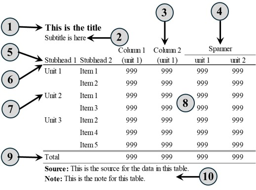
Figure 13. Structure of a table.
Title (The Main Hook): Ditch the boring, generic labels. Choose short, lively titles with an actual subject and a verb to tell the reader exactly what mic-drop insight they are about to get. Keep it left-aligned (centering is so last decade) and use sentence-case capitalization. For example, instead of a snooze-fest like "2026 Results", go with "Counts in the region remained steady during 2026".
Subtitle (The Sidekick): Sitting right below the title in a smaller, non-bold font, the subtitle feeds the reader quick, active sentences with extra flavor. It is the perfect spot to clarify units or point out a subtle trend, like "Counts in unit 2 showed a small decrease".
Column Header (The ID Badge): These are the labels holding down the top row of your columns. They tell everyone exactly what data is living below them, transforming chaos into an organized paradise. Keep them crystal clear. If you are using stubheads, tuck your units neatly in parentheses right underneath.
Spanner (The Umbrella): Think of a spanner as a manager overseeing a couple of columns. Placed above two or more column headers, it groups them under one big category. This saves you from repeating yourself and creates a beautiful visual hierarchy. Fun fact: spanner text gets centered, even if the column titles below it are left-aligned.
Stubhead (The Anchor): Located in the VIP top-left corner, the stubhead sits directly above your row labels and to the left of your column headers. It is the ultimate traffic controller, anchoring the entire index and showing readers exactly how the horizontal rows connect to the vertical columns.
Rule (The Minimalist Fences): These are the lines that divide your table sections. The golden rule here? Less is infinitely more. Avoid thick, heavy prison bars and stick to a few clean horizontal or vertical lines to prevent a cluttered mess. At a bare minimum, you need a line under your stubhead (or column headers) and another one separating your final data row from your footnotes.
Row (The Storytellers): Rows cruise horizontally while columns travel vertically. A single row pulls together different types of data, like dates, text, and numbers, to tell a complete story about a single subject. In the data science world, you might hear this called a record, tuple, or observation.
Cells (The Tiny Box Cars): The intersection where a row meets a column is a cell. It is the smallest, most atomic unit of your table. Think of cells as little storage units holding individual bits of information, whether that is text, numbers, or even a tiny image.
Footer (The Grand Finale): This is the row at the very bottom that does the heavy lifting with summaries, grand totals, or averages. Because it holds the ultimate answers to the numerical columns above, it needs to stand out from the crowd. Give it some VIP treatment by using bold text or a clean separating line.
Sources and Notes (The Paper Trail): Sources tell the world where you got your data, while notes catch any extra context that didn’t fit inside the cells. This ensures your table can survive out in the wild all by itself, even if it gets separated from your main report. If you are using both, always list the source first, followed by the notes.
To see these principles in action, we are going to look at the exact same data table used for the comparison graphs in the Multi-Tier Supplier Performance Comparison Optimization section of my Industrial Flow & Enterprise Safety Visualizations group of tools. Now, to be fair, the original table gets the job done, but it definitely won’t win any design awards as there is massive room for improvement. We will start by giving that exact same data a sleek, modern facelift. Check out Table 2 to see a version that most design snobs would actually approve of!
Table 2. Generic Data for Graphing -Typical Bad Format
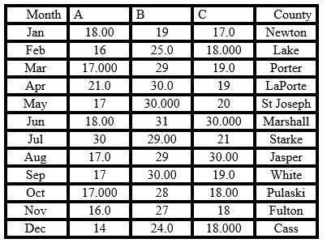
Select Appropriate Precision: Stop Counting Cents on a Million-Dollar Deal
Choosing the right level of numerical precision in a table is a delicate balancing act. You want to give your readers enough detail to make smart decisions, but you don’t want to assault their eyes with a mountain of unnecessary decimal places. Let’s be honest: the human brain processes words way faster than a giant wall of numbers, so drowning your audience in trailing digits is a great way to completely hide your main point. Furthermore, slap-happy decimal usage can trick people into thinking your measurements are way more scientifically accurate than they actually are. If you are tracking integer counts, leave the decimals at the door. For example in Figure 14, look at how we cleaned up item A in the table below: by ruthlessly evicting the decimal point and dropping all those pointless extra zeros, the data instantly becomes readable.
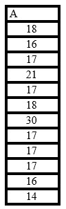
Figure 14. Table – Select appropriate precision.
Right Align Numbers: Line Up Your Digits!
When it comes to numbers in a table, right-alignment is an absolute law. Lining up your digits by the decimal point makes quick visual comparisons and mental math a total breeze. And don’t forget to push those column headers over to the right too, as they should never be left floating in the center while the data hugs the right wall. By strictly organizing your digits based on their place values, such as units under units, tens under tens, and hundreds under hundreds, the physical length of the number perfectly mirrors its actual size. This brilliant setup allows your readers to instantly spot the biggest numbers on the page without having to scan every single digit. Plus, since most of us learned to do basic math from right to left, right-aligning works with our natural thought process instead of against it .To see this in action, check out Figure 15. By pushing the numbers to the right and evicting the useless decimal points and trailing zeros, the data practically reads itself.
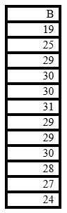
Figure 15. Table – Right align numbers.
Left Align Text: Start Where the Eyes Land
For languages that read from left to right, the top-left corner is prime real estate. Because our eyes are hardwired to start there, creating a perfectly straight left margin gives the reader a comfortable, familiar home base to return to after finishing each line. Plus, a clean left edge is an absolute lifesaver when someone is scanning down a column trying to quickly find a specific category, name, or location. On the flip side, centering your text or pushing it to the right creates a jagged, uneven left wall. This forces your reader’s eyes to play a frustrating game of hide-and-seek just to find where the next line starts. Naturally, this rule applies to your column headers too. Keep them left-aligned so they match the text below. For a good example, check out the County column in Figure 16. See how beautifully scannable it is when everything lines up on the left?
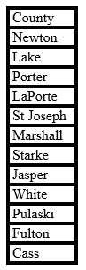
Figure 16. Table – Left align text.
Remove Unit Repetition: Stop Repeating Yourself!
Plastering dollar signs, euro symbols, or percentage signs on every single row of data is the visual equivalent of someone shouting the same word over and over again. It creates unnecessary noise and ruthlessly steals the spotlight from your actual data. Take a look at the left column of Figure 17. Drowning the page in endless percent signs just makes the layout look messy and cluttered. By ruthlessly evicting those repetitive symbols and tucking the unit safely up into the column header, you instantly clean up the table’s appearance. This subtle tweak lets your users spot important trends or statistical oddities infinitely faster. The column on the far right shows the civilized way to do it: let the header do the heavy lifting so your numbers can just be numbers.
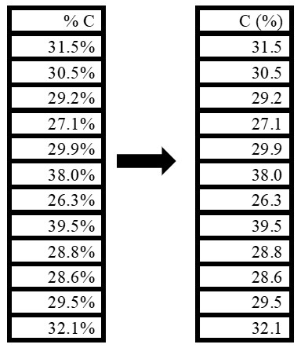
Figure 17. Table – Remove unit repetition.
Group Similar Data: Stop the Endless Scrolling
Dumping raw, unorganized data onto a page is a great way to give your readers a massive headache. If you want to make life easier for anyone dealing with a massive dataset, you need to group related information into logical chunks. Whether you organize things by alphabetical order, category, or sheer level of importance, clean structure slashes mental strain and leads to faster, smarter decision-making. Even better, when similar items are sitting right next to each other, users can easily compare values and spot hidden connections between variables without having to memorize numbers from three pages back. Take a look at Figure 18. By simply adding a dedicated "Quarter" column to the left of the months, we instantly slice a chaotic 12-month calendar into neat, bite-sized quarterly segments. Your brain immediately breathes a sigh of relief.
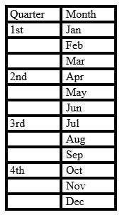
Figure 18. Table – Group similar data.
Highlight Key Data: Roll Out the Red Carpet for Important Numbers
Let’s be honest: when everything on a page looks identical, nothing stands out. Highlighting your most critical data points is the ultimate shortcut for turning a dense wall of numbers into instant, actionable insights. By using smart visual cues like a splash of color or some strategic bold text, you can forcefully guide your reader’s eyes directly to the headline results that they might otherwise gloss over. This little trick massively cuts down the time people spend hunting for information, leaving them with more brainpower to actually analyze options and make smart decisions. Check out the masterful execution in Figure 19 To make the heavy hitters pop, every single value that hits 30 or above has been given a bold makeover. Meanwhile, to reduce background noise, all the other numbers have been politely asked to fade into a soft gray.
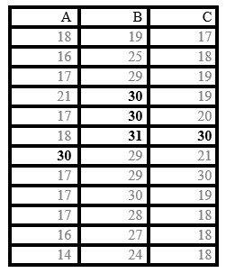
Figure 19. Table – Highlight key data.
Fully Optimized Table: Let the Data Shine
At the end of the day, the whole point of optimizing a table is to stop gatekeeping your own information. By ruthlessly evicting visual clutter and organizing your layout like a pro, you give your reader’s eyes a break and let them focus on what actually matters. This beautiful simplicity makes it effortless to scan rows, compare values, and spot major takeaways in seconds.
When you combine all these design principles, like perfect right-alignment, smart text placement, and strategic highlighting, you transform a chaotic spreadsheet nightmare into a user-friendly masterpiece. These rules ensure your data stays accurate while becoming highly accessible and ready for lightning-fast decision-making.
In short, elite table design should be invisible; it should step out of the way and let the data do the talking. By stacking all of these principles together, we can take the "perfectly acceptable" Table 2 and transform it into a gorgeous, high-performance version. Behold Table 3 in all its optimized glory!
Table 3. Generic Data for Graphing - Better Format
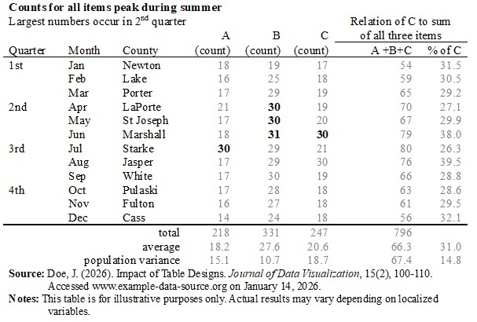
Creating presentation charts
Once you have whipped your raw numbers into gorgeous, optimized graphs and tables, it is time for the main event: sharing your masterpiece with the world via tools like PowerPoint. Let’s be real … the visuals on your slides are the true MVPs of your presentation. While you stand up there telling the story, your graphs and tables are working in the background as the ultimate hype men, providing hard proof and instant clarity.
They aren’t just taking up space or acting as decorative wallpaper; they are there to help your audience digest complex info way faster and more convincingly than a boring block of text ever could. Think of your data as court-admissible evidence for your claims. By flashing well-organized visuals on screen, you instantly prove to the room that your brilliant ideas are backed by solid, undeniable facts … not just your personal opinion.
The Chart Universe: Mapping Out Your Options
To choose the perfect visual weapon for your presentation, you need to understand the chart ecosystem. We can break charts down using a simple 2x2 matrix based on two big ideas: Discovery and Progression.
The Discovery Axis (Finding vs. Telling): This is all about your goal. Are you being exploratory (digging through the data weeds to discover hidden insights)? Or are you being declarative (shouting those insights from the rooftops)? Every great project kicks off in exploration mode and ends with a declaration.
The Progression Axis (Theory vs. Reality): This tracks how your ideas mature. You start with conceptual frameworks (the big, high-level theories) and then smoothly transition into being data-driven (using cold, hard metrics to bring those big ideas to life).
When you mash these axes together, you get the four main categories of charts. Check out Table 4 below to see exactly how this matrix lines up!
Table 4. Types of charts – discovery versus progression
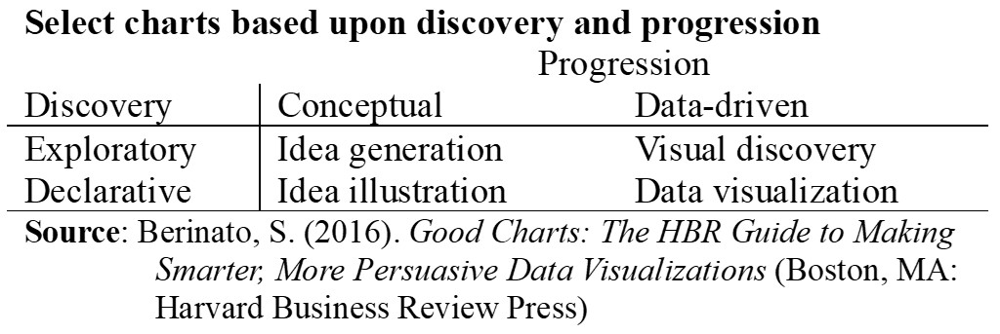
Idea Generation: The "Brain-Dump" Phase
When your project data feels like a tangled ball of yarn, you need a map. Specifically, a fancy tool called a morphological chart (or combination grid, if you want to sound smart in meetings). Chop your giant problem into bite-sized pieces like variables, tasks, and constraints. Then, go wild! Write down every single option that pops into your head. This is a judgment-free zone … aim for quantity, not quality. Throw in some heatmaps, scatterplots, or a trendy Sankey diagram. Fun fact: these brain-dump charts account for about 15% of all the charts floating around out there.
Idea Illustration: The Metaphor Maker
Got a complex process or a tricky concept but zero actual numbers? Enter the idea illustration chart. Instead of boring everyone with hard data, you get to use metaphors and cool visual frameworks to explain your point. Want to show a chain of command? Grab a hierarchy diagram. Explaining a workflow? Use a flowchart. Showing how things overlap? Good old Venn diagrams to the rescue. Just break your big idea into a few dozen digestible pieces, link them with arrows, and boom — instant clarity. These conceptual masterpieces make up a solid 30% of the chart population.
Visual Discovery: The Data Detective
When you are drowning in massive, fast-moving "Big Data," visual discovery is your secret weapon. Think of it as a speed-dating round with your data to spot weird anomalies and hidden trends before diving deep. You can even let an AI do the heavy lifting of trend-spotting first, leaving the actual genius insights to you. Just make sure your data is freshly scrubbed, figure out your variables (time, place, categories), and nail down your main question, such as "Why on earth is this trend spiking?" Match your goal to the right visual setup, whether it’s a histogram, density plot, or scatterplot. Because this is high-level detective work, these charts only make up a rare 5% of the mix.
Data Visualization: The Storyteller
The golden rule of sharing data is simple: cut the fluff and get straight to the point. Nobody wants to stare at a raw spreadsheet. You are here to tell a compelling story, back up an argument, and make a specific point. Don’t just dump graphs onto a slide; start with a clear hypothesis and think about what you actually want your audience to do with this information. Choose punchy visuals that make sense in two seconds flat. Add benchmarks, helpful notes, and clear highlights so your readers don’t have to play guessing games. It works like a charm, which is probably why this category accounts for roughly half of all charts ever made.
Making Your Charts Actually Readable (Without Giving Everyone a Headache)
Once you’ve picked your chart type, the real work begins, making sure it doesn’t look like a chaotic maze. Here’s a fun psychological truth: your audience will absolutely not read your chart in the orderly fashion you intended. They are like magpies; they instantly fly toward the shiny, weird stuff like bright outliers, intersecting lines, or anomalies. Their brains can only process a tiny handful of elements at once, and they desperately want to connect the dots to find a deeper meaning. They also rely on universal laws, like time moving left to right and north being up. Mess with those norms, and you’ll trigger a collective existential crisis in the meeting room.
To keep everyone sane and impressed, follow these gold standards:
Evict the chartjunk. Treat your charts like a minimalist apartment. Embrace whitespace. Say absolute goodbye to cheesy clipart, 3D effects, or fancy bullet points.
Use strategic colors, not rainbows. Color should communicate data, not match your outfit. If you don’t need color, stick to sleek blacks and grays. If you must use color, cap it at three shades and use logical schemes for your specific data types.
Keep text on the level. Use text to bridge the gaps and tell the story. Avoid vertical or diagonal text unless you want your audience tilting their necks like confused puppies. Skip the ALL CAPS (no shouting in the office) and limit your font styles so it doesn’t look like a ransom note.
Write a punchy headline. Keep your title under 10 words using an active, direct sentence that delivers the "so what?" punchline. Shove boring details like units and dates into a tiny footnote where they belong.
Enforce a data diet. Do not overwhelm your viewers. Stick to a maximum of seven highlighted numbers and never stack more than two graphs or tables on a single chart.
Ditch the map. Unless geographic location is absolutely critical to the punchline, leave the map out of it.
Do the math yourself. Do not force your audience to do mental math during a presentation. If they are busy calculating percentages in their heads, they are definitely not listening to you.
Make it readable. Double-check that font sizes and contrasts pass the basic eye test. If people have to squint, you’ve already lost them.
The art of data visual storytelling
Charts and graphs should be informative, memorable, and, dare we say it, actually fun. The secret sauce is merging cold data with storytelling to leave your audience wowed. Every great data story needs the classic cinematic elements: a setting, a hero, a messy journey, a turning point, a happy resolution, and a clear call to action.
The Magic of Data Visual Storytelling
Visual storytelling takes ugly, complicated datasets and transforms them into easy narratives. Here is what you get when you stop doing data dumps.
Instant processing: Human brains are wired for pictures, not massive spreadsheets. Visuals let everyone (even the non-tech crowd) spot hidden patterns without getting a headache.
Fewer “guesses”: Clear charts give leaders the confidence to make quick, data-backed decisions, saving them from relying on pure guesswork.
Peace between departments: It bridges the gap between your technical wizards and the rest of the company, getting everyone on the same page.
Emotional drive: Explaining the "why" and the "so what" adds a human touch. It builds trust, wins over stakeholders, and inspires teams to actually do something.
Building the Plot
Don’t reinvent the wheel; just use one of the five major business plotlines:
The Origin: How the past shaped our current reality.
The Underdog: Rising from a tough situation to absolute victory.
The Comeback: Salvaging a project that was on the brink of total failure.
Defeating the Villain: Overcoming a major external threat or market crash.
The Impossible Mission: Reaching a goal that everyone thought was unreachable.
Chop your chosen plot into three acts. The Start hooks the room, sets the scene, introduces the problem, and hints at the fix … remember that you are the narrator, not the main character. The Middle is the chaotic adventure where you explore solutions and connect the best one to your audience. The End ties up loose ends and tells the room exactly what to do next.
Know Your Target Audience
Keep your focus tight. Build a quick 3-minute story outline and boil it down to a single, sharp main idea. Trying to hit ten different goals at once will just confuse people. When presenting, adjust your style to match the brains in the room:
The Brainiacs (Engineers/Scientists): Feed them abstract concepts, deep technical details, multi-dimensional elements, and pure innovation.
The Creatives (Artists/Designers): Keep it sleek and clear. Focus on bold imagery, repetition, and familiar themes.
Your goal is to simplify the complex, not dumb it down. If your chart includes a bizarre, unbelievable anomaly, explain it immediately before everyone assumes it’s a typo.
How Not to End It
When it’s time to close, do not say, "Let me share a true story" because it’s cheesy and everyone knows you’re presenting a business case. Ban all complex abbreviations and confusing jargon from your final slides. Keep the energy high so they leave wanting more. Unite the room around the data, motivate them without using scare tactics, and make the next steps easy to visualize. If they don’t buy into the story, your data is just noise.
A Tale of Two Slide Decks: Highway Edition
When tasked with presenting highway data, most people just load up PowerPoint and create a slide deck that could easily double as a sleep aid. The tragic 4-slide example in Figure 20 is a classic symptom of "Death by PowerPoint." It packs in a bizarre mix of font styles, poorly chosen tables, zero context, a distracting background, and enough unnecessary clip art to trigger a headache. It’s trying to look "designed," but it actually fails to give the viewer any useful information whatsoever.
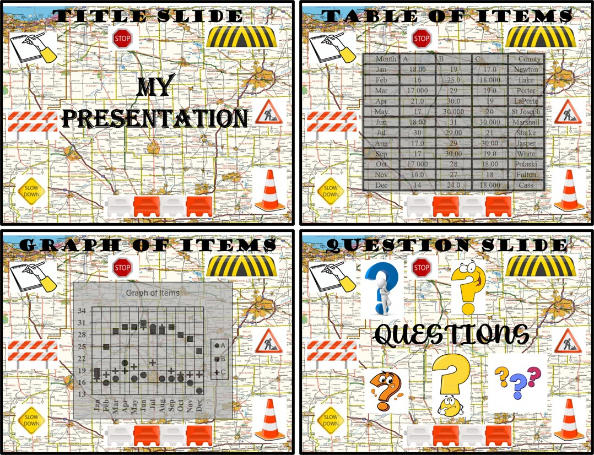
Figure 20. Death by PowerPoint slide deck example.
To really boost our presentation, let’s burn that approach to the ground and use a proper storytelling framework. We’re going with the cinematic "Defeating the Villain" theme, where our main hurdle is the massive differences in counts that we must tackle. The strategy is simple: introduce the key data insights, make the seriousness of the variance clear with a straightforward graph, and wrap up with a proposed plan that outlines our findings and expected improvements.
Our victory roadmap requires us to collect samples from 3 to 4 counties every month for one quarter. To be highly efficient, we are shrinking our sample sizes over time:
The First Month: Gather the baseline data.
The Second Month: Reduce the sample size to exactly half of the first month.
The Third Month: Drop it down to just 25% of the first month.
We will also gather data from Carroll County (which we completely missed in the first round) by combining it with the data from Cass, Fulton, and Pulaski Counties. This coordinated strike will show the data counts as seen in Table 5, which we’ll use to predict our future improvements.
Table 5. Revised Generic Data for Graphing - Better Format
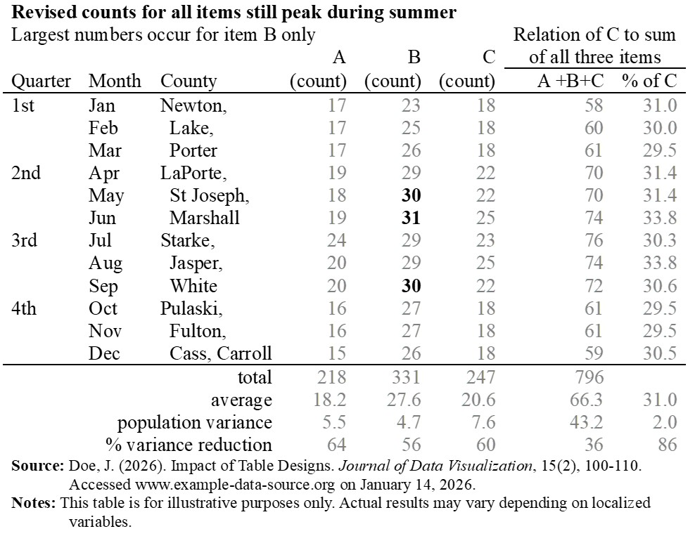
Next up, we’re going to map this journey across exactly four clean slides:
Slide 1: The Title Slide.
Slide 2: The Data Showcase.
Slide 3: The Data Analysis.
Slide 4: The Final Plan and Expected Improvements.
Figure 21 illustrates a much better 4-slide presentation that’s infinitely easier to understand. Inspired by the legendary story of defeating the villain, this is a deck that will actually stick in people’s minds long after the presentation is over.
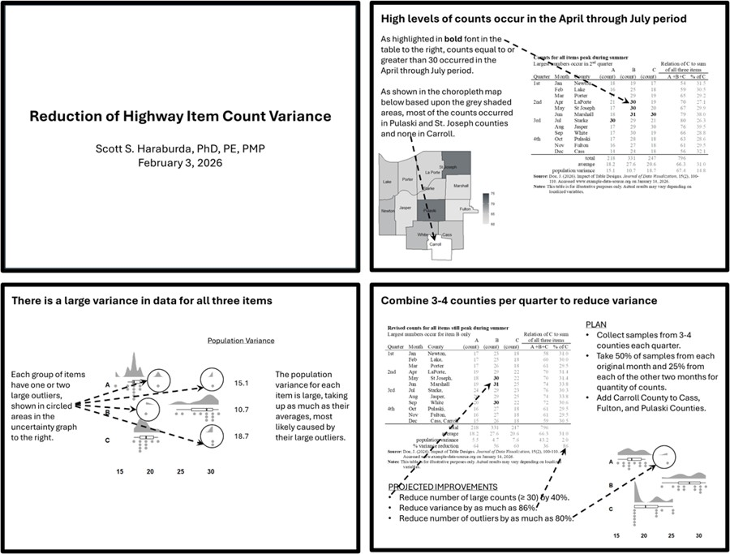
Figure 21. Death by PowerPoint slide deck replacement example.